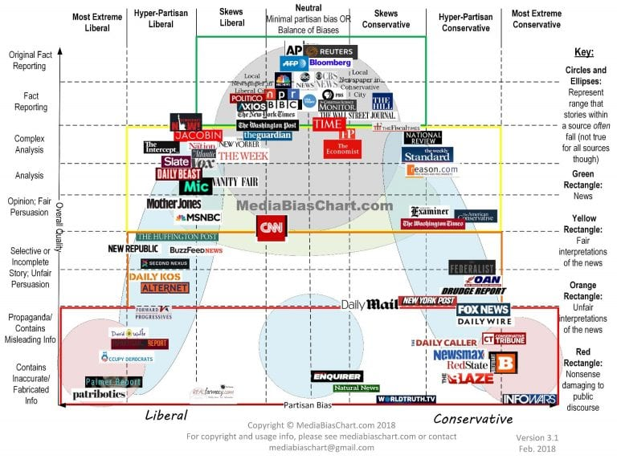

Links Compilation
david perrell
five books
: experts recommend the five best books in their subject and explain their selection in an interview
helena
: global problem solving organization
libgen: It's a website that lets you download almost any book for free. You should have an adblocker while using this website.
MIT tech review
mschf
: "American Art" many of which have gone internet viral -- proceed with caution? (wiki)
Notion : free for anyone with a .edu account; notetaking software and project management software that is used for note-taking, task management, project management, knowledge management, and personal knowledge management.
product hunt : daily collection of newly launched current basic consumer/b2b SaaS products
protocol : useful general tech publication
rest of world : tech trends 86 USA
Stanford book recommendations :
wjf : sategorized card decks, some with different levels that allow you to deepen your existing relationships and create new ones.
wnrs : similar to above, "three carefully crafted levels of questions and wildcards that allow you to deepen your existing relationships and create new ones."
xkcd : "a webcomic of romance, sarcasm, math, and language"
 CORNELL RESOURCES
CORNELL RESOURCES
PubMed
Google Scholar
You have access to stream thousands of movies/films, through services like:
Kanopy
Alexander Street
Access popular eBooks and Audiobooks on your computer or phone through the Overdrive app
SpringerLink Online
: useful for papers and some textbooks
Through the Cornell library, Cornell students can request books, articles, and even musical scores for free.
You also get free access to news sources like:
New York Times
Wall Street Journal
USA Today
In general, it's wise to be aware of media bias when reading news.
Linkedin Learning
has many free classes and lessons on a ton of topics if you sign in with your Cornell email